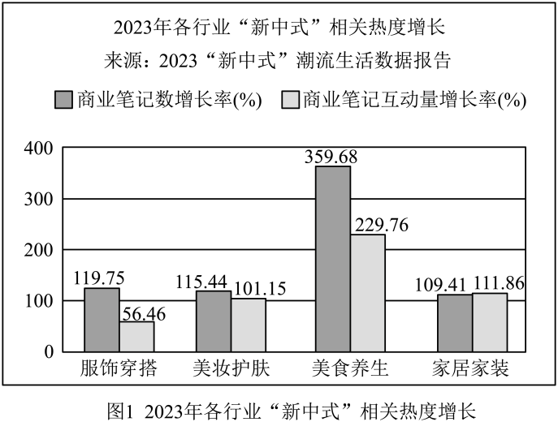
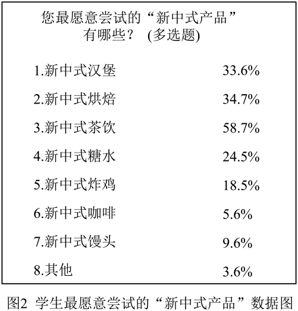

练习 · 非连续文本阅读
新中式文化与品牌营销
阅读三则材料与两幅图表，分析新中式风格、品牌案例和营销问题。图表要先看图例、统计对象和比较范围。
导读
阅读三则材料与两幅图表，分析新中式风格、品牌案例和营销问题。图表要先看图例、统计对象和比较范围。
原文
原文按结构分节；随文内容可定位至对应段落。
材料一：解释新中式风格，并以图表呈现其热度与偏好。
①伴随着国力增强，民族意识复苏，在探寻中国设计界本土意识之初，孕育出含蓄秀美的新中式风格。它是“文化＋个性”的结合，是以中国文化为根基与现代元素巧妙结合运用，更偏向于传统文化元素的表达和传递的艺术风格。
②在微博、微信、抖音等社交媒体上，越来越多的时尚博主和网红开始关注和推广“新中式”。通过社交媒体平台，人们可以轻松获取到最新的“新中式”时尚资讯和潮流趋势。


图1数据：服饰穿搭119.75%、56.46%；美妆护肤115.44%、101.15%；美食养生359.68%、229.76%；家居家装109.41%、111.86%。各行业依次为商业笔记数增长率和互动量增长率。
图2数据：新中式汉堡33.6%，烘焙34.7%，茶饮58.7%，糖水24.5%，炸鸡18.5%，咖啡5.6%，馒头9.6%，其他3.6%；为多选题。
材料三：反思跟风模仿，并提出结合文化内涵与消费需求。
①“新中式”概念持续受到热捧，然而，在新中式营销的探索过程中，在审美疲劳的背景下，我们不禁要问：真正的新中式路在何方？
②例如“中式馒头”虽然在网络走俏，然而在品尝后，大部分人给出了“没必要”“不理解”的观点。一位食客直言不讳地指出，过于追求“花里胡哨”的中式馒头，并不意味着能赢得顾客的青睐和购买意愿。
③同时一种趋同化的营销手段正在不断挑战着用户的审美观念。例如，众多茶饮品牌纷纷效仿，推出所谓的“书法杯”。从外观来看，这些书法杯的外观大同小异，最初在市场上引起了广泛关注。然而，随着越来越多品牌开始模仿这种设计风格，使用书法、国画等传统元素作为包装的点缀，使得这一创意逐渐失去了新鲜感。消费者在面对大量类似的包装时，往往难以区分不同的品牌和产品，也容易产生视觉上的疲劳。
④我们不难发现，单纯的元素堆砌和形式模仿，并不能真正触动消费者的内心。新中式的成功，不应仅仅停留在表面的包装和形式上， 更应深入理解和挖掘传统文化的精髓， 与现代审美和消费需求相结合，创造出真正有内涵、有特色的产品。（选自《新中式风潮席卷却频遭“翻车”尴尬，真正的新中式路在何方？》 ，有删改）
第1题 · 客观判断
根据上述材料内容，正确的一项是（ ）
A．2023 年各行业“新中式”商业笔记数增长率都高于互动量增长率。
B．据“新中式产品”数据图，我们发现同学们最愿意尝试新中式汉堡。
C．茶颜悦色在产品名称、字体选择、海报宣传等方面都透露着文雅风。
D．新中式馒头特别追求花里胡哨的外包装，这样才能吸引顾客的青睐。
参考答案1展开 / 收起
参考作答
C。
文本分析
A项查看证据 ↗
A项错在“都”：图1中家居家装的商业笔记数增长率低于互动量增长率。
B项查看证据 ↗
B项错在比较对象：图2中占比最高的是新中式茶饮。
C项查看证据 ↗
C项对应材料二第①段列出的产品、字体和宣传细节。
D项查看证据 ↗
D项与材料三第②段所说“花里胡哨并不意味着赢得青睐”不符。
第2题 · 客观判断
请根据上述材料内容，选择正确的一项（ ）
A．新中式风格的诞生与国力增强、民族意识复苏相关，核心是中国文化与现代元素的融合。
B．茶颜悦色通过产品名称、装修设计、版权合作等多种方式，凸显品牌的传统文化美学价值。
C．“中式馒头”因追求“花里胡哨”的形式，完全无法赢得消费者的青睐和购买意愿。
D．众多茶饮品牌模仿“书法杯”设计，导致创意失去新鲜感，消费者易产生视觉疲劳。
参考答案2展开 / 收起
参考作答
本题存在多解。原参考答案为 D，但 A、B 也能从材料得到支持，不宜作为有效单选题。
文本分析
A项查看证据 ↗
A项概括中国文化与现代元素结合，材料一第①段可以支持。
B项查看证据 ↗
B项概括产品、装修与名画版权的运用，材料二第①②段可以支持。
C项查看证据 ↗
C项把“并不意味着能赢得青睐”扩大为“完全无法”，不符合材料三。
D项查看证据 ↗
D项对应材料三第③段关于模仿和视觉疲劳的分析。
第3题 · 情境表达
厦门某馅饼品牌准备进军“新中式烘焙”，请结合材料内容，为厦门“新中式”馅饼产品的营销提出建议及具体方案。
参考答案3展开 / 收起
参考作答
①挖掘闽南文化元素，结合馅饼制作故事设计具有地方特色的包装。
②调研消费者口味，改良甜度与口感，以产品品质支撑营销。
③利用社交媒体展示制作过程和文化故事，并根据反馈改进。
④与当地茶饮或文旅活动合作，设计有辨识度的组合产品。
文本分析
文化与差异查看证据 ↗
材料一强调传统文化根基，材料三反对表面堆砌和同质模仿。
产品与传播查看证据 ↗
材料一、三提到社交传播及现代消费需求，可据此提出产品改良与传播方案。